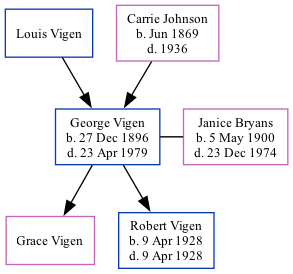

George Leonard Dilley Vigen 1896 - 1979
[ Home ] | [ Surnames Index ] | [ Family History ]The eldest of 3 children of Louis Vigen and Carrie Johnson, , George was the great-great-uncle of Stephanie Hardesty (née Teten), was born in Souix City, Iowa USA on Dec 27, 18961,2,3,4,5,6,7,8 and married Janice Bryans (with whom he had 2 children: Grace Marion and Robert Louis) in Souix City on Nov 12, 1923.
During his life, he was living in Sioux City, Woodbury, Iowa in 19001; in Sioux Ward 3, Woodbury, Iowa in 19102; in Woodbury in 19157; in Sioux City Precinct 8, Woodbury, Iowa in 19203; in Sioux City in 19304 (the same place as his parents had been living in 1900) and in 19355; and in Sioux City, Woodbury, Iowa, USA on Apr 1, 19405.
He died on Apr 23, 1979 in Houston, Harris, Texas, USA8,9.
Parents
- Louis Dewey
- Carrie was born in Jun 1869
Children
- Grace Marion
- Robert Louis was born on Apr 9, 1928
Citations
- 1900 United States Federal Census Ancestry.com Operations Inc (Age: 3; Marital Status: Single; Relation to Head of House: Son)
- 1910 United States Federal Census Ancestry.com Operations Inc (Age in 1910: 13; Marital Status: Single; Relation to Head of House: Son)
- 1920 United States Federal Census Ancestry.com Operations Inc (Age: 23; Marital Status: Single; Relation to Head of House: Son)
- 1930 United States Federal Census Ancestry.com Operations Inc (Age: 33; Marital Status: Married; Relation to Head of House: Head)
- 1940 United States Federal Census Ancestry.com Operations, Inc. (Age: 43; Marital Status: Married; Relation to Head of House: Head)
- Iowa, Births and Christenings Index, 1857-1947 Ancestry.com Operations, Inc.
- Iowa, State Census Collection, 1836-1925 Ancestry.com Operations Inc (Marital Status: Single)
- Social Security Death Index Ancestry.com Operations Inc
- Texas Death Index, 1903-2000 Ancestry.com Operations Inc
Family Tree
Data (GEDCOM) maintained by Jay Weston Hannah, Omaha, Nebraska, USA.
Website generated by ged2site. Last updated on Jun 18, 2024.